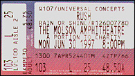
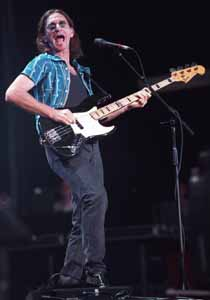

|
June 30, 1997 Molson Amphitheater. Toronto, ONT
 scan by Gregor Prahl
Rush's happy homecoming  Canada Day celebrations came early last night at Molson Amphitheatre as hometown prog-rockers Rush played their first-ever show at the outdoor shed. And to an enthusiastic capacity crowd, no less. In fact, the band -- powered by bassist-vocalist Geddy Lee, guitarist Alex Lifeson and drummer Neil Peart -- went so far as to have a camera crew, an impressive camera crane, and an overhead camera on hand to document the event for their own archives. Universal Concerts had earlier claimed this was Rush's first ever outdoor show in Toronto, but they did an outdoor concert at Varsity Arena some 20 years ago. Last night, however, time seemed to have stood still for the three accomplished musicians, recent recipients of the Order Of Canada who have sold a staggering 35 million albums over their 22-year career. Aided in their multi-media presentation by a huge video screen and elaborate laser lights, Rush couldn't have asked for a more receptive crowd to applaud their homecoming. The male-dominated audience, who played instruments in the air to their hearts' content, seemed to know every nuance of every song and jumped to their feet at the end of each tune. Crowd favorites over the course of two and a half hours and two sets proved to be new songs Driven, Half The World and Limbo from Rush's latest album, Test For Echo; Animate and Nobody's Hero from 1993's Counterparts, and older songs that went back 20 years, including The Trees, Closer To The Heart and 2112. The band -- Lifeson gets a special fashion bravery award for wearing black leather pants in exceptionally muggy weather -- stuck to a fairly straight-ahead, workman-like approach, avoiding any flashiness in favor of some of the tightest playing I've seen this year. Okay, so maybe Peart did perform a spectacular drum solo about two hours into the show, but then, what would a Rush concert be without one? He was especially entertaining as his circular stage rotated mid-performance, enabling him to play a second drum kit hidden behind his first set, while hilarious stock footage of people dancing played on the video screen behind him. Rush gave a sneak preview of their Test For Echo tour last December with "a blind date" show at the Phoenix, but only 800 contest winners got to see that. Last night's show was able to accomodate 20 times as many with 16,000 seats filled, making it the first capacity concert of the season at the Amphitheatre. The first 107 concertgoers to bring a bag of non-perishable food got a free copy of Test For Echo. The same food drive is taking place for tomorrow night's second Rush show. Tickets are still available.
SUN RATING 4 OUT OF 5
Jam! Showbiz July 1, 1997
Rush gives fans the works at Molson Amphitheatre Sometimes the cards need to be laid out on the table. The mirror held up to our faces so there is no possibility of us looking off and avoiding the inevitable truth. Canada has the world-wide reputation of being a hard country/venue to play. We contain our energy. We restrain our excitement until everyone joins in en masse. Is it that British conservative influence? Aye, Governor.
What does it take to get us, the Rush fans, off our fannies? Alex Lifeson's amp spontaneously combusting? A freak Lake Ontario tidal wave submerging Ontario Place? An out of control airplane from the Island Airport crash-landing right on top of us? An Order Of Canada winning rock band (As unusual a sight as a purple-feathered Canada Goose), a variable Canadian institution, playing their guts out for their hometown crowd and except for momentary lapses of reason and seemingly reckless abandon, we sit stock still bobbing our heads like we're starring in some retarded Wayne's World parody. Stand up, I say. Cast aside the polite-as-can-be Canuck stereotype and be boisterously proud of your local boys made good. "It's always a great pleasure to play in our hometown," said bassist and lead vocalist Geddy Lee, "We've got about 6 million songs to play". No word of a lie, folks. Rifling through their distinguished album collection, Lee, lead guitarist Alex Lifeson and undisputed professor of the skins, Neil Peart, cranked out past hits and selections from their new disc Test For Echo, for ninety minutes before The Trees had the crowd on their feet. Peart's sly critique of the Internet -- Virtuality -- and the soul-stirring Nobody's Hero had butts a resting. Showing no signs of slowing down, the trio fulfilled many a fan's dream by playing the full version of the classic 2112 complete with video accompaniment. A shimmering red pentagram reflected in a pool of water on the screen, and the familiar disembodied, emotionless voice intoning "We Have Assumed Control" through the speakers left a haunting impression. Hitting the stage following a short break (Neil Peart undoubtedly resting his bandaged right elbow) satellite dishes beaming green laser beams over the heads of the audience preceded Test For Echo. Split-screen images of the O.J. Simpson trial, Jean Chretien and Bill Clinton spouting hot air, intermingled with the Easter Island monuments, pyramids and Buddha statues visually supported the title track's meaning. A white refrigerator littered with magnets, two large disco balls (Stolen off the back of a U2's equipment truck?) and two signs straight out of the Half The World video also competed for space with the hard-driving band. Lifeson's quirky mannerisms and the inclusion of dinosaur puppets (a bit of self-deprecating humor, surely) sporting Blue Jays uniforms, rocking along with the beat of Tom Sawyer atop the amps generated much laughter. They were here to play and having a helluva lot of fun doing it. Not too shabby at all for a trio of supposed dinosaurs. Rating: 4 / 5
The Toronto Globe & Mail July 2, 1997 DINOSAUR-ROCK BAND Rush HAS EVOLVED WITH THE TIMES The power trio, the simple guitar, bass, drums lineup that was pioneered by Cream in the late sixties, was a concept that was doomed to the lifespan of a fruit fly. Cream came and went in under three years, and virtually every other similarly styled outfit discovered the limitations of the three-person structure with one notable exemption. Rush, the Toronto-based band that adopted the form in 1969, is still going strong. Monday night, the local outfit drew more than 15,000 fans young and old to the first show of it's two night stand at the Molson Amphitheatre. Even considering the favourite-son status, it's a remarkable achievement. For more that a quarter of a century, Geddy Lee, Alex Lifeson and Neil Peart have been building and maintaining a career and a fan base that refuses to go away. While other local favourites have blossomed and withered, Rush has soldiered on. And Monday night's performance, actually a stop on the band's current North AMerican tour, fully illustrated why. First off, the band has never treaded water. This is a band that form it's beginning has continued to evolve. And Monday's marathon (almost three hour) performance showed this to a greater extent than any other local Rush appearance ever has. During the course of its performance, Rush surveyed its career all the way back to its 1976 breakthrough album 2112, dipping into almost every release since then, and naturally topping off with selections from it's current Test For Echo. Closing off the first half with the entire 2112 suite, and juxtaposing that with such bookends as Nobody's Hero and Test For Echo, showd just how much the band has grown. 2112, typifying the band's early years, was a sprawling, multifaceted work that owed much tot he sonic diddling of such seventies English progressive rockers as Yes, containing abrupt and often inexplicable changes in rhythm and tempo, 2112 was and is the kind of lengthy and pretentious work that wasresponsible for driving music fans into the love'em or hate'em camps. Based on writing of Ayn Rand, it combined the band's sci-fi leanings with the themes of free will and individualism. Performing it Monday night was a risky undertaking for the band, using as it did a large chunk of stage time for a number that many of the band's younger fans wreen't familiar with. But performing 2112 did show how sophisticated musically, lyrically and thematically the band has become since then. Numbers such as Nobody's Hero, Hald the World, Roll the Bones, Resist and Virtuality, all performed Monday, push the borders of the rock-trio approach far beyond what anyone might have imagined 20 years ago. Simply put, the band survives because it is still interesting. Like all Rush performances, this was padded outh with a plethora of intriguing video images, projected on a Jumbotron that had been installed behind the trio. These cutting-edge images have always presented a visual focus for the band, given that each of the three members has always been more interesting in making music than creating personal images. Granted, not every concert favourite was performed Monday night, but then the band has released about 20 discs in it's career, so a few popular numbers had to go missing. But with YYZ, and Tom Sawyer and the Spirit Of Radio among two dozon numbers performed, no true Rush fan went away unhappy. All Told this was yet again, a triumphant homecoming.
| ||||